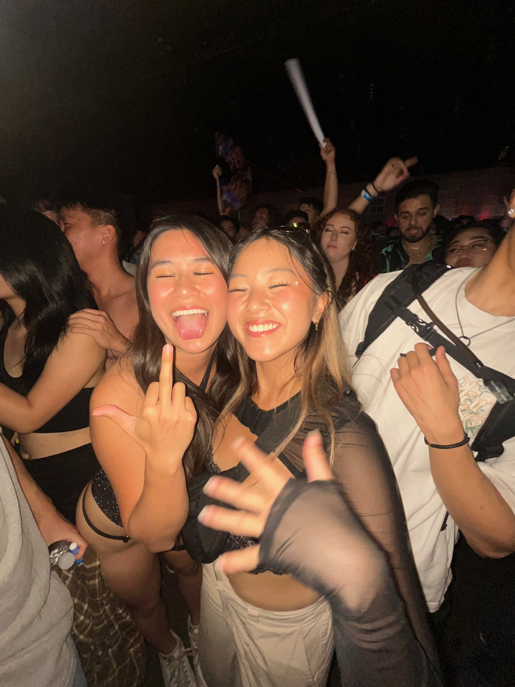

third year, cognitive science!
hi! i'm tk and i'm a third year studying human-centered design at berkeley!
some of my favorite places to eat!

What is something you learned from this article? (2-3 sentences)
What was your favorite part of this article? (2-3 sentences)
Copy and paste a quote you found compelling, interesting, or cool.
On a scale from 1 to 10, how much did you enjoy reading this article?
If you scored below a five, please briefly explain why.